← home
what i build | agent's take | portfolio | agent picks | ai bellwethers | next fortnight | companies i love | gear i'm hunting | news | research log
Gear I'm hunting
last checked: 2026-10-14T13:52 (UTC)
The tractor list finally has a priced, in-band strong find: a 2022 McCormick 90hp loader tractor at $62,000. The Leeton offset discs, the only strong set, have sold. Kioti was searched for the first time and nothing used at 90hp or more is in range.
jump to: Tractor 90-140hp w/ loader | Portable home, 2 rooms + bathroom | Chainsaw, 30in bar | Offset discs 24-32 plate | Tree root ripper, single tyne | Winch for the Ranger | Mac mini M5 Pro/M6 32GB/1TB | Drop deck trailer | Dog cooling mat | 500L poly dog trough
Tractor, 90-140hp, with front-end loader
link
$15,000 to $80,000 · within 400km of Darlington Point, NSW
must have: front-end loader (FEL) included; 90 to 140 hp; under 4,500 hours; known manufacturer: John Deere, Case, Kubota, New Holland, Massey Ferguson, McCormick, Kioti, Lovol or better
nice to have: non-AdBlue variant (not a deal breaker); cab over ROPS; service history
Build quality matters more than hours alone. A tidy 3,000-hour Deere beats a rough 1,500-hour no-name. Sweep the dealer used pages below as well as the auction and classifieds sites. farmmachinerysales.com.au blocks WebFetch and curl (403): open it in Chrome like Facebook, or skip it on a cloud run and say so in notes.
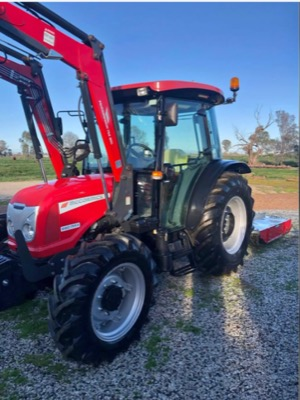
2022 McCormick S-Max 90hp 4WD cab tractor with loader and 4-in-1 bucket, 251 hours — strong link
$62,000 (private sale; GST not mentioned; seller will consider a swap for an Iveco tray truck) · Yarroweyah, VIC (190km)
251 hours, described as new condition · 90hp turbo diesel, 4WD (seller's description lists it as 'McCormick SMAX 90 HP 4WD 2022') · 4-in-1 bucket; the photo shows a McCormick-branded loader, but the loader model is not stated · air-con cab · 1-year-old 6 ft slasher included · listed 10 weeks ago; service history and AdBlue not stated
A 2022 tractor with a cab and a 4-in-1 loader at 251 hrs, 190 km away and $18,000 under the ceiling. It sits exactly on the 90hp floor and has been listed for 10 weeks, so call today.
Facebook Marketplace · first seen 2026-10-14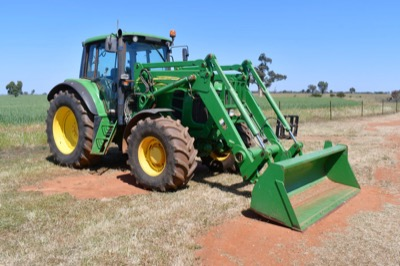
2008 John Deere 6630 with JD 741 loader (Tottenham clearing sale, lot 1) — strong link
price TBC (clearing sale Fri 23 Oct 12:00pm AEDT; still no guide, reserve or bid shown (checked 15 Oct); 0% buyer premium; vendor GST registered) · Tottenham, NSW (390km)
1,552 hours (described as genuine) · 130hp 6-cyl, PowrQuad Plus 24-speed with left-hand shuttle · John Deere 741 loader, Euro hitch, level lift, joystick, GP bucket · A/C cab, TLS front axle suspension, FWA, 2 remotes, 540/540E/1000 PTO · vendor bought it new, described as well maintained · inspection Thu 22 Oct 10am-3pm at the Woolshed, 1955 Moira Vale Rd, about 26 km SW of Tottenham · sold as is, where is; agent Kevin Miller Whitty Lennon · distance is approximate
Clears every must with 1,552 hrs, a cab, a matching Deere loader, one owner and no buyer premium. There is still no guide price, so call the agent before the 22 Oct inspection.
AuctionsPlus · ends 2026-10-23 · first seen 2026-10-12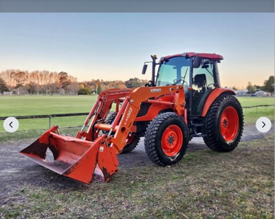
Kubota M9540 95hp 4x4 cab loader tractor, 4-in-1 — decent link
$65,000 (plus GST ($71,500 inc GST)) · Moss Vale, NSW (500km)
2,230 hours · 95hp 4-cyl Tier 2 pre-emission · 18-speed with F/R shuttle · Kubota loader, Euro hitch, 3rd function, 4-in-1 bucket · cab with air seat, UHF · one owner ex-slashing tractor, recent service · dealer listing (Highlands Equipment), still in stock 15 Oct at the same price
Clears every must with low hours and one owner, but it is 500 km away and $71,500 inc GST is a lot for 95hp.
Facebook Marketplace · first seen 2026-10-02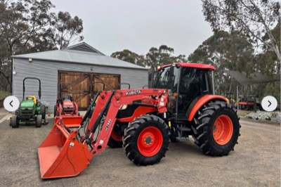
2021 Kubota M9540 dual speed 95hp with loader and 4-in-1 bucket, 1,004 hours — decent link
$84,500 (price includes GST) · Bendigo, VIC (360km)
95hp, 1,004 hours, 4WD · hydro shuttle transmission with dual speed · Kubota loader with 4-in-1 bucket · photos show an enclosed cab, which the text does not mention · same seller as the Bendigo JD 5093E; listed 11 weeks ago · service history and AdBlue not stated
Clears every must with low hours on a 2021 Kubota, but $84,500 is $4,500 over the ceiling. It has sat for 11 weeks, so there may be room to offer.
Facebook Marketplace · first seen 2026-10-14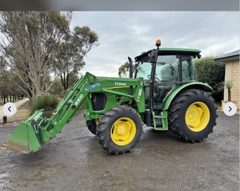
2020 John Deere 5093E with loader and 4-in-1 bucket, 1,450 hours — decent link
$86,000 (price includes GST) · Bendigo, VIC (360km)
93hp, 1,450 hours (seller's description) · front-end loader with 4-in-1 bucket; loader make not stated · photo shows an enclosed cab, which the text does not mention · private seller, highly rated on Marketplace; still listed 15 Oct at the same price · same seller also lists a 2021 Kubota M9540 with loader at $84,500 · service history and AdBlue not stated
A 2020 Deere at 93hp and 1,450 hrs with a loader clears every must, but $86,000 is $6,000 over the ceiling. It only works if the seller will drop.
Facebook Marketplace · first seen 2026-10-13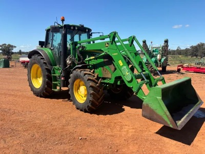
2014 John Deere 6150 with front-end loader (Barellan clearing sale, lot 1) — decent link
price TBC (clearing sale Thu 5 Nov 3:00pm AEDT; no guide, reserve or bid shown; vendor GST registered; buyer premium not stated) · Barellan, NSW (110km)
2014, 3,900 hours · front-end loader with 3rd function, Euro hitch · front wheel assist with front suspension, 4 rear remotes, break-aways · auto track steering wheel, ISOBUS rear socket, new front tyres · hp not stated on the page; the 6150 badge suggests it is at or just over the 140hp ceiling, so ask the agent · photos show a cab, which the text does not mention · agent Rod Evans, Elders Griffith; pick-up by 22 Nov
The closest loader tractor on the list, a Deere with 3,900 hrs and a 3rd-function loader, 110 km away. There is no guide price and hp is unconfirmed, so call Elders Griffith before 5 Nov.
AuctionsPlus · ends 2026-11-05 · first seen 2026-10-14
recently gone: 2011 Deutz-Fahr Agrofarm 420 with CRX360 Plus loader, 232 hours at $61,500 (inc GST, dealer (Midstate Machinery Brokers)) (gone); John Deere 5101 100hp 4WD cab loader tractor with 4-in-1 bucket at $65,000 (plus GST ($71,500 inc GST)) (sold); 2013 John Deere 5090R (ex lease), 1,053 hours at $23,300 (auction closed 7:00pm AEDT 8 Oct; final bid not shown on the page; last bid read was $23,300) (sold); 1997 John Deere 6210 MFWD, cab, Burder front-end loader at $35,000 (sold); Massey Ferguson 5440 Dyna-4 4WD at $36,990 (reduced from $39,990 (was $37,750 on the last check)) (gone); 2021 Deutz-Fahr 4080.4E cab 4WD with factory 4-in-1 FEL at $47,500 (sold); Kubota M5101, 700 hours at $60,000 (plus GST) (sold)
Portable home, container or similar, 2+ rooms with bathroom
link
$5,000 to $30,000 · within 400km of Darlington Point, NSW
must have: bathroom; at least 2 rooms
nice to have: kitchen or kitchenette; container-based or relocatable build; ready to transport
Price band tracks quality: 5k for a rough site hut, 30k for a finished container home. Transport cost is worth noting separately.
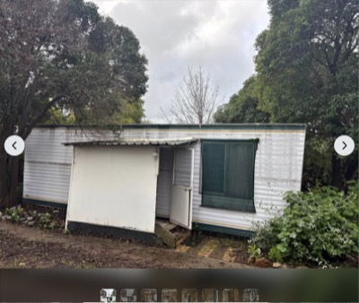
Transportable cabin / granny flat, 8m x 3.2m — strong link
$7,000 (open to offers; listing shows reduced from $20,000) · Deniliquin, NSW (170km)
kitchen and living · bedroom with ensuite · 8m x 3.2m · used, fair condition · buyer to remove, seller can organise transport · open to offers
Still the cheapest unit that clears every must, 170km away and open to offers; condition is fair, so inspect before paying.
Facebook Marketplace · first seen 2026-09-30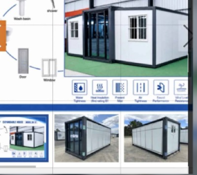
Expanding container cabin, 2 bed, full bathroom, base unit (new) — strong link
$19,990 (plus GST if applicable) · Cobram, VIC (180km)
2 bedrooms · full bathroom, plumbed ready to connect · expands to 5.9m x 6.2m · new, in stock, inspection welcome · electrical not included · dealer: GV Containers and Haulage, free delivery within 30km of Cobram, delivery further out at extra cost
New 2-bed with a full bathroom, in stock 180km away; GST could push it toward $22k and it still needs wiring.
Facebook Marketplace · first seen 2026-09-30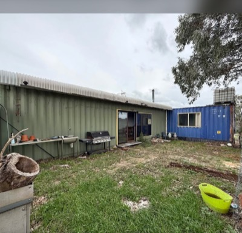
Off-grid shipping container home, 2 bed, 2 lounges, kitchen, bathroom — strong link
$22,000 (reduced from $25,000; all offers considered) · Cootamundra, NSW (260km)
2 bedrooms, 2 lounge areas and dining · kitchen, shower, toilet and sink · wood fire · solar off-grid system, 12 volt electrical, gas hot water · body says 2 x 40ft containers, title says 2 x 20ft; size unconfirmed · used, good condition; furniture included if wanted · buyer arranges and pays all transport and must take it apart if required · listed 20 weeks ago, still up 15 Oct
A lived-in 2-bed with a kitchen, bathroom and off-grid power for $22,000, 260km away. It has sat for 20 weeks, so there is room to offer, but moving two containers will cost real money.
Facebook Marketplace · first seen 2026-10-13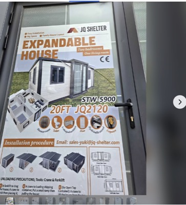
New expanding container cabin, 2 bed, bathroom, kitchen — strong link
$22,990 (plus GST if applicable) · Cobram, VIC (180km)
2 bedrooms · full bathroom · L-shaped kitchen cabinets, stainless sink, mixer tap · expands to 5.9m x 6.4m · double glazed windows · electrical and plumbing ready for connection · new, in stock, inspection 7 days · free delivery within 30km of Cobram
Premium model from the same Cobram dealer with the kitchen fitted; it clears every must and every prefer at 180km.
Facebook Marketplace · first seen 2026-09-28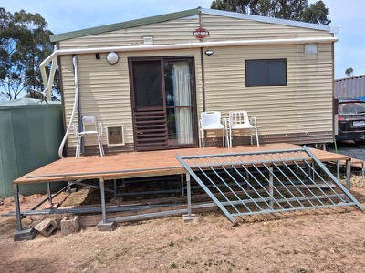
Relocatable home, 2 bed, kitchen-dining, lounge, bathroom, laundry, 10m x 6m — strong link
$25,000 · Wedderburn, VIC (330km)
2 bedrooms with built-in robes · kitchen and dining · large lounge room · bathroom and laundry · 10m x 6m, moves in two 10m x 3m sections · buyer to remove; transport cost not stated · private seller; same home was on Facebook earlier and dropped off
The biggest real home in range, with 2 bedrooms, a lounge and a laundry for $25,000. At 330km in two sections, transport is the main extra cost.
Gumtree · first seen 2026-10-13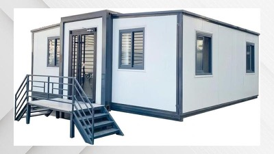
New 20ft expandable granny flat, 2 bed, bathroom, kitchenette — decent link
$18,000 (GST not stated; pickup only) · Seymour, VIC (320km)
new, 20ft expandable, folds to 20ft container size for transport · 2 bedrooms · built-in bathroom and kitchenette · insulated walls, double glazed windows, 2.4m ceiling · dimensions opened out, weight and electrical not stated · pickup only, transport cost not stated · same seller posts this ad under Epping, Campbellfield, Strathmore, Canterbury, Kilmore and Seymour, so the yard may be in north Melbourne (about 390km) · a $24,000 version of the same 2-bed is also listed
At $18,000 it is the cheapest new 2-bed with a bathroom in range. Confirm where it is actually collected from and whether GST is extra before counting on it.
Gumtree · first seen 2026-10-14
recently gone: Unused expandable 2-bedroom container house with ensuite at $6,400 (auction closed 14:00 AEST 30 Sep; Lloyds shows the result as Not for Publication; last seen bid $6,400 plus 16.5% premium) (gone); Cabin on skids, 7.4m x 3.4m, bathroom, kitchen, bedroom and bunk room at $9,000 (heading says $8,000, asking $9,000; open to offers implied) (sold); 13m tiny home, 2 bedrooms at $16,000 (sold); Relocatable home/cabin, 2 bedroom, 10m x 6m at $25,000 (buyer to remove; moves in 2 sections of 10m x 3m) (gone); Unused expandable 2-bedroom container house with ensuite at $4,000 (auction closed about 15:13 AEST 30 Sep; Lloyds shows the result as Not for Publication; last seen bid $4,000 plus 16.5% premium) (gone); Ausco modular building 12.0 x 3.0m, bedroom, bathroom, kitchen at $4,200 (last seen bid; auction closed 29 Sep after 174 bids, closing price not shown) (sold); Portable living quarters on skids, 3.6m x 9m at $20,000 (sold)
Chainsaw, Stihl or Husqvarna, 30 inch bar capable
link
$500 to $2,000 · within 100km of Melbourne, VIC
must have: Stihl or Husqvarna; rated to carry a 30 inch bar (e.g. Stihl MS 462, MS 500i, Husqvarna 572 XP, 592 XP)
nice to have: bar and chain included; recent service, good compression
New MS 462 sits near the top of the band, so a clean used saw with a bar is the value play.
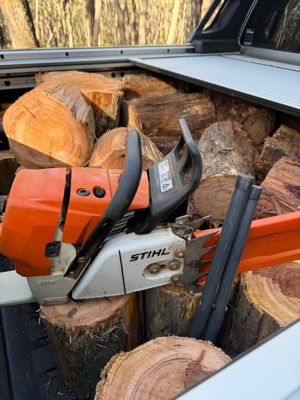
Stihl MS 461, full service kit, Egan muffler — strong link
$1,000 · Werribee, VIC (30km)
Full service kit fitted, ready to go · Egan straight-shot muffler (aftermarket) · Two extra chains; bar length not stated · Pickup only, still listed 15 Oct
Still the cheapest serviced 461 at $1,000, 30km away; ask about bar length and the muffler mod.
Gumtree · first seen 2026-10-10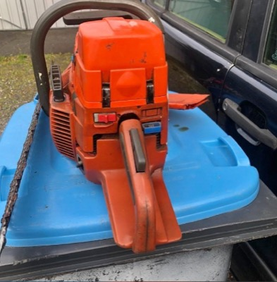
Husqvarna 395 XP, new 25in bar, spare bar and chain — strong link
$1,200 · Melbourne, VIC
New 25in speed tip bar and chain · Spare bar and chain included · Used - Good; shows listed 2 days ago · Suburb not given (location approximate); hours and service not stated
Big-bore Husqvarna with a new 25in bar plus a spare for $1,200, $899 under a new 462.
Facebook Marketplace · first seen 2026-10-12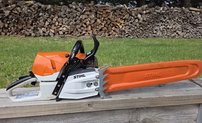
Stihl MS 462 C, ex-government, just serviced — strong link
$1,295 · Wonga Park, VIC (40km)
Ex Vic government fire-management saw, regularly serviced · 20in Stihl Rollomatic bar and 3/8 chain · Just serviced, bar dressed, clean and sharp · Pickup Wonga Park or Rupanyup · Hours not stated
Still the cheapest MS 462 near Melbourne at $1,295, $804 under new, with a documented service.
Gumtree · first seen 2026-10-11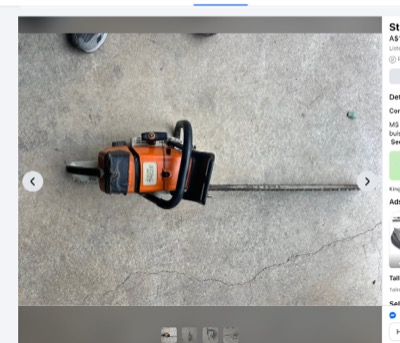
Stihl MS 660 Magnum — strong link
$1,350 · Kinglake, VIC (60km)
Stihl lists the MS 660 for 20-36in bars · Good condition, seller downsizing a business · Small hole in air filter cover, taped (seller says $25 to replace) · Bar length, hours and service not stated · Listed 3 weeks ago; door pickup or meetup
Rated past 30in for $1,350 with only a cosmetic fault, but the new $1,500 660 includes two 30in bars.
Facebook Marketplace · first seen 2026-10-13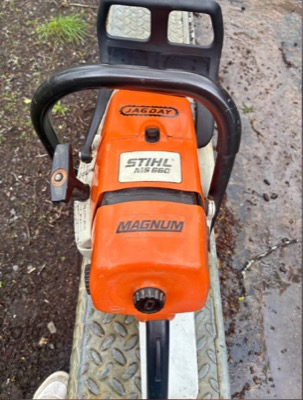
Stihl MS 660 Magnum, 30in bar plus spare 30in bar — strong link
$1,500 (Reduced from $1,600, open to offers) · Melbourne, VIC
Comes with a 30in bar and a spare 30in bar · Seller says always serviced, extremely reliable · Used - like new, listed 2 days ago · Suburb not given (location approximate); hours not stated
Only saw found so far that already has a 30in bar, with a spare, for $1,500, $599 under a new 462.
Facebook Marketplace · first seen 2026-10-14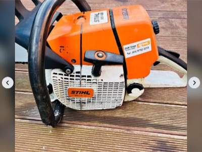
Stihl MS 460 Magnum, 20in bar — decent link
$950 · Melbourne, VIC (3032) (10km)
Seller says excellent compression, ready to work · 20in bar, chain in good order · Listed 12 weeks ago; pickup postcode 3032 · Same seller as a $1,100 MS 461 and a $1,500 MS 462 · 30in rating not confirmed: Stihl max bar for the 460 is cited at 28-32in depending on market
Cheapest saw near town at $950 and 12 weeks unsold, but the older 460 may not be rated for a full 30in bar.
Facebook Marketplace · first seen 2026-10-13
recently gone: Stihl MS 461 Magnum, 20in bar at $1,000 (Reduced from $1,200) (sold); Stihl MS 462 C, 20in bar at $1,100 (gone); Stihl MS 500i, 25in light bar at $1,200 (sold); Husqvarna 395 XP with spare bar and chain, 25in speed tip bar at $1,200 (sold); Stihl MS 462, 63 hours, ex-government at $1,250 (down from $1,400; description prices powerhead $1,400 and $1,500 with a 20in or 25in bar, so confirm whether $1,250 includes a bar) (sold); Stihl MS 461 Magnum, just serviced at $1,275 (sold); Stihl MS 661C Magnum at $1,200 (firm) (gone)
Offset discs, 24-32 plate, for a 90-130hp tractor
link
open on price · within 400km of Darlington Point, NSW
must have: 24 to 32 plates; maximum 3.0 to 3.5 m working width; matched to 90-130 hp
nice to have: bearings in good order; plates with life left, not dished out; local within 400km, or an overseas maker that ships to Australia
Width is the hard constraint: anything over 3.5 m is too much for the tractor and too wide to cart. Overseas makers (e.g. made in China, Italy, Turkey, Brazil) count if they ship to Australia: quote price plus freight and import costs.
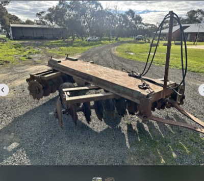
Shearer 300 24-plate trailing offset disc — decent link
$5,500 (ONO, was $6,000) · Wharparilla, VIC (250km)
24 plates · 2.4m working width · new 22in scallop discs on front gang · new front gang bolt · hp rating not stated · listed 7 weeks
Cheapest proper unit, with new front discs, but 2.4 m is narrow and the listing gives no hp rating.
Facebook Marketplace · first seen 2026-09-30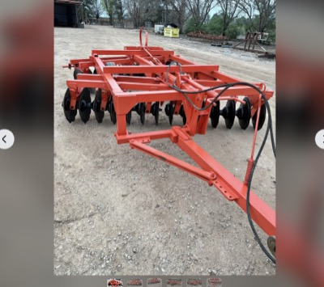
Blue Line 28-plate offset disc, new bearings and ram seals, width not stated — decent link
$7,500 (was $13,500) · Griffith, NSW (40km)
28 plates, heavy duty · new lift ram seals · new wheel bearings · disc gang bearings replaced as required · width not stated · listed 5 weeks
Closest used 28-plate, with the bearing work done. Measure the width and check plate wear in person.
Facebook Marketplace · first seen 2026-09-28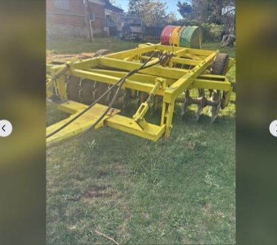
Heavy duty Australian made 24-plate offset discs — decent link
$7,700 (negotiable, includes GST, was $8,800) · Orange, NSW (390km)
24 plates · 2.5m cut · front gang of 12 discs just replaced with new bearings, receipt over $5,000 · rear discs about 60% · hydraulic lift, truck tyres · seller says it needs at least 90hp · listed 5 weeks
Meets every must and the front gang was just redone, but it is at the edge of the 400 km range and the rear plates are at about 60%.
Facebook Marketplace · first seen 2026-09-30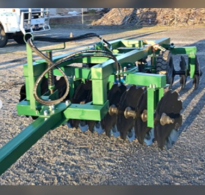
New 1BZ-2.5 24-plate trailing offset disc, crated — decent link
$7,890 (listed as discounted) · Seymour, VIC (330km)
24 plates, 660 mm discs · text says 1900 mm cut; the same model is sold as 2.5 m elsewhere · rated for 70-100hp · hydraulic wheel lift · new, comes unassembled in an iron crate · the same model is US$1,630-2,370 ex-factory on made-in-china, freight not quoted
Brand new for the price of a used set, but it is a light Chinese build rated to 100hp, it needs assembling, and the listing gives two different widths.
Facebook Marketplace · first seen 2026-10-12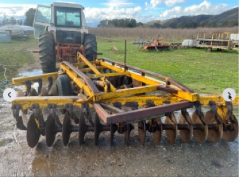
Baldan CRSG28 28-plate trailing offset disc — decent link
$8,000 (cash on pickup only) · Myrtleford, VIC (320km)
28 plates, owned since new · about 2.4 t, oil bath bearings · seller says it needs about 130hp; pulled with a Case 1370 · plates worn: seller quoted $135+GST a plate to replace (about $3,800+GST for 28) · RHS bar added at the back for rollers · width not stated by seller; a WA dealer's new CRSG28 lists 3,200 mm and 125-140hp · buyer must load and cart it
A proper heavy Brazilian 28-plate at a third of new, but it sits at the top of the hp range and needs about $3,800 in plates to bite like new.
Facebook Marketplace · first seen 2026-10-13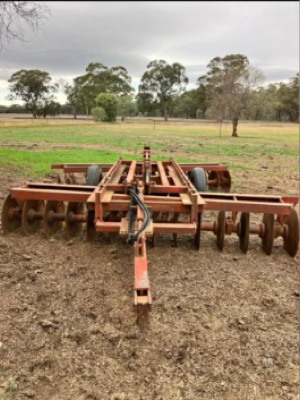
Jarrett 28-plate offset discs, hardly used — decent link
$9,000 (ONO; page shows US$9,000 but the seller's text says $9000 ono) · Katamatite, VIC (200km)
28 plates, Jarrett · seller says excellent condition, hardly used · trailing, hydraulic hoses visible in photo · width not stated · hp rating not stated · bearing and plate wear not stated
A hardly-used 28-plate for $9,000 about 200 km away, but the listing is three lines long: get the width and hp before driving.
Facebook Marketplace · first seen 2026-10-14
recently gone: 24-plate trailing offset disc, used once (Eco-Offset decal) at $12,000 (sold); Armstrong WCH 24-plate heavy offset disc at $7,250 (sold)
Tree root ripper, ideally a single deep tyne
link
open on price · within 400km of Darlington Point, NSW
must have: built for ripping tree roots: heavy shank, deep rip, not a general tillage or chisel ripper; matched to 90-130 hp
nice to have: single tyne; 3-point linkage; shear-bolt or spring release protection; replaceable points and shin; local within 400km, or an overseas maker that ships to Australia
One deep, heavy tyne pulls deepest for the horsepower and is what root ripping needs; multi-tyne tillage rippers are out. Overseas makers (China, Italy, Turkey, NZ etc.) count if they ship to Australia: quote price plus freight and import costs, and mark distance as overseas.
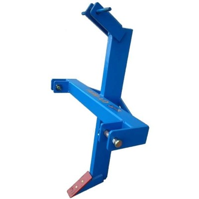
Farm-Aid FA106 heavy duty single-tine ripper (new) — strong link
$1,145 (inc GST, freight extra, delivery Australia-wide) · Coopers Plains, QLD (ships)
single tine · 150 x 50 mm billet shank · 700 mm working depth · reversible point 225 x 75 x 16 mm · suits 60 hp and up (no upper rating stated) · 3-point linkage, Cat 2 · new, Australian made
Cheapest new heavy single tyne with a 700 mm working depth, still $1,145 on 15 Oct; freight to Darlington Point still needs a quote.
Pipeliner (Farm Supplies) · first seen 2026-10-10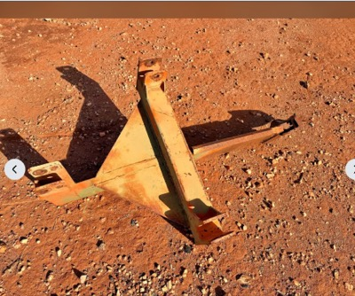
Linkage single-tyne ripper, North Yalgogrin — decent link
$250 (reduced from $350) · West Wyalong, NSW (100km)
single tyne · 3-point linkage · used, good · ripper tip bent · located North Yalgogrin · no hp or shank size stated
Closest unit to home and unchanged at $250; the bent tip needs a look, and no hp or shank size is given.
Facebook Marketplace · first seen 2026-10-02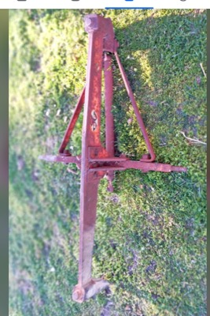
Massey Ferguson single-tyne deep ripper, 3PL (two available) — decent link
$270 ($270 each, sold separately) · Crookwell, NSW (390km)
single tyne · 3-point linkage · two units: one lighter 1.4 m with top link, one heavy-duty large solid frame · heavy one has some rear-frame damage, still works · pick-up Crookwell
Heavy-frame unit is the pick at $270, but it has frame damage and is 390 km away; unchanged.
Facebook Marketplace · first seen 2026-10-08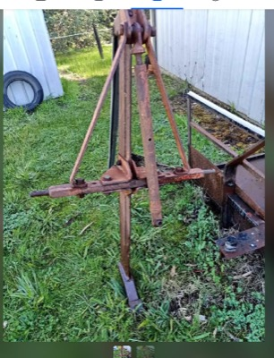
Massey Ferguson single-tine ripper, 3PL — decent link
$350 ($350 firm) · Bendigo, VIC (310km)
single tine · 3-point linkage · heavy A-frame with cross-bar · used, good working condition · no hp or depth stated · listed 15 weeks ago
Solid-looking undamaged MF single tine at $350 firm, but no hp or depth stated; unchanged after 15 weeks.
Facebook Marketplace · first seen 2026-10-10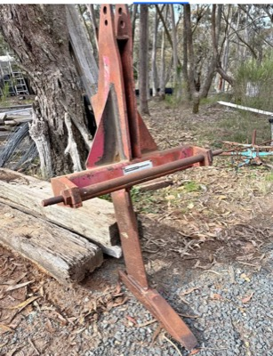
Jarrett single-tyne ripper with pipe layer, 3PL — decent link
$600 · Bywong, NSW (380km)
Jarrett brand, part of an estate sale · single tyne on a tall gusseted A-frame (from photo) · pipe layer attachment per title · used, good · no hp, shank size or depth stated · listed 4 weeks ago, pick-up Bywong
Proper single-tyne build from a known Australian maker at half the new price, but no hp rating and about 380 km away.
Facebook Marketplace · first seen 2026-10-14
recently gone: Massey Ferguson single-tyne deep ripper, 3PL (two available, sold separately) at $350 ($350 each, two rippers listed) (gone); Hayes pipe ripper and layer, 3PL at $750 (sold)
Winch for the 2013 Ford Ranger dual cab with ARB bullbar
link
open on price · within 100km of Melbourne, VIC
must have: 12V electric, low-mount, 9,500 to 10,000 lb: ARB rates the PX Ranger Summit bar for low-mount winches up to 10,000 lb (12,000 lb only if the bar is confirmed to take it); fits the standard 10in x 4.5in mount pattern, control box that mounts behind the bar or remotely; complete: winch, control box, remote, rope and hook
nice to have: synthetic rope over steel cable; known brand: Warn, ARB Intensity, Runva, Carbon, Ironman, TJM, Bushranger; wireless remote; fairlead to suit (hawse for synthetic)
Small enough to post, so listings elsewhere in Australia with shipping count as decent. Check the bar first: Summit or Deluxe, and the winch version rather than the non-winch cover panel. ARB names Warn, Magnum, Bushranger and Smittybilt low-mount winches for the Summit.
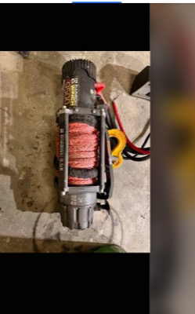
Carbon 9,500 lb winch, synthetic rope, solenoid and hand controller — strong link
$500 (Was $550) · Tyabb, VIC (60km)
9,500 lb (Carbon) · synthetic rope and hook included · solenoid and wired hand controller included · used, good condition, works well · fairlead and mount pattern not stated · pickup Somerville
Complete 9,500 lb synthetic kit with controller for $500, cheapest complete winch on the board and an hour's drive.
Facebook Marketplace · first seen 2026-10-13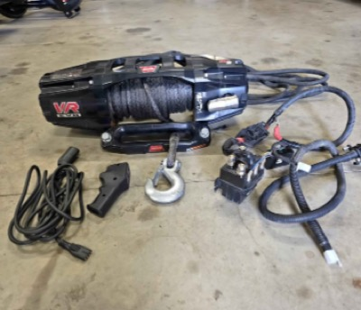
Warn VR Evo 10-S, like new, factory fitted, never used in anger — strong link
$900 (Was $1,000; seller says price is fair and firm) · Tatura, VIC (170km)
10,000 lb (VR Evo 10-S) · synthetic rope, hawse fairlead and hook visible in photo · control pack set up for engine-bay mounting with extended cable (Gumtree listing) · wired remote in photo; wireless remote not shown · driveway test runs only · new VR Evo 10-S is $1,289 at 4x4 Down Under · also on Gumtree, ad 1345134839, same seller and price
Like-new 10,000 lb synthetic Warn with remote-mount control pack at $900, $389 under new.
Facebook Marketplace · first seen 2026-10-10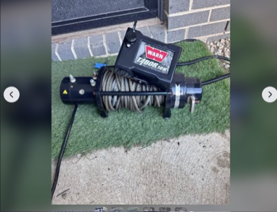
Warn Magnum 10k, complete setup, genuine Warn remote — decent link
$700 (Was $800) · Melbourne, VIC (20km)
10,000 lb (Warn Magnum) · complete setup, all parts, ready to bolt on · genuine Warn remote · used, like new; rope type not stated · suburb not stated; listed 5 weeks ago
Complete Warn 10k at $700 is fair, but the $500 Carbon is complete with synthetic rope for $200 less.
Facebook Marketplace · first seen 2026-09-30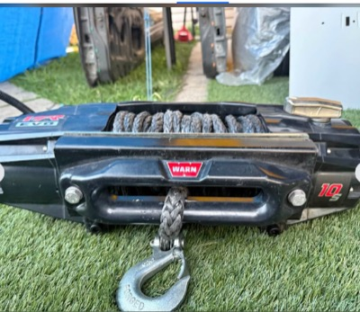
Warn VR Evo 10-S, like new, synthetic rope, no remote — decent link
$800 (Remote not included; Warn VR Evo remote and control module is $189 at 4x4 Down Under) · Melbourne, VIC (20km)
10,000 lb (VR Evo 10-S) · synthetic rope, hawse fairlead, hook and top-mounted control pack visible in photo · no remote: about $989 all-in with a new Warn remote and control module · used, like new; selling because it is too big for his car · suburb not stated; listed 3 days ago
Same winch as Tatura and in Melbourne, but about $989 all-in once a remote is added, $89 more than Tatura.
Facebook Marketplace · first seen 2026-10-13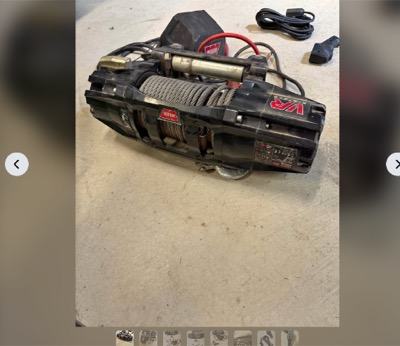
Warn VR EVO 10, steel cable, wireless remote, ARB fitted, never used — decent link
$800 · Adelaide, SA (730km)
10,000 lb (VR EVO 10) · steel wire rope, not synthetic (visible in photos) · wireless hand controller included · bought new from ARB and fitted, never used · control box and fairlead not itemised in listing · listed in Adelaide, would need posting
Unused VR EVO 10 with wireless remote at $800, but steel cable and 730 km away, so only if the seller posts.
Facebook Marketplace · first seen 2026-10-10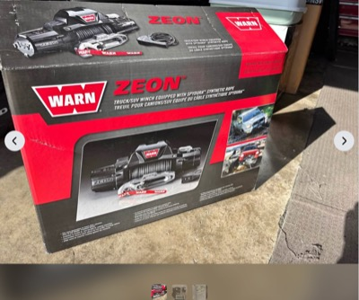
Warn Zeon 10-S, brand new in box — decent link
$1,500 · Melbourne, VIC (20km)
10,000 lb (Zeon 10-S per title) · brand new in box, listed 1 day ago · box art shows Spydura synthetic rope, hawse fairlead and corded remote; contents not itemised in listing · 4x4 Down Under: Zeon XD 10-S $2,799, VR Evo 10-S $1,289 · suburb not stated
Unused Zeon with synthetic rope in Melbourne, but at $1,500 it costs $211 more than a new VR Evo 10-S with warranty.
Facebook Marketplace · first seen 2026-10-14
recently gone: Warn Zeon 10-S, used like new, wired and wireless remote at $800 (sold); Warn Magnum 10k with remote, working, good condition at $380 (Was $450) (sold)
Mac mini M5 Pro or M6, 32GB or more RAM, 1TB or more SSD
link
open on price · within 100km of Melbourne, VIC
must have: Apple Mac mini with an M5 Pro, M6 or newer chip (Apple sells no plain-M5 Mac mini: the line is M6 and M5 Pro); 32GB or more unified memory; 1TB or more SSD
nice to have: new or Apple Certified Refurbished with full warranty; AppleCare transferable if used; pickup in Melbourne or posted
Posts easily, so Australia-wide listings with shipping count. M6 tops out at 32GB; 48GB or 64GB means M5 Pro. Compare against Apple's own build-to-order and refurbished prices.

Mac mini M6, 32GB, 1TB (new, Apple) — decent link
$2,799 · Online (ships)
M6 12-core CPU, 12-core GPU · 32GB unified memory · 1TB SSD · New, full Apple warranty · A$233.25/mo on Apple finance
Cheapest way to clear the must list at $2,799, unchanged; no AU retailer, refurb or local listing has 32GB.
Apple AU · first seen 2026-09-29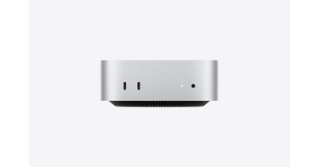
Mac mini M5 Pro, 48GB, 1TB (new, Apple BTO) — decent link
$4,049 · Online (ships)
M5 Pro 15-core CPU, 16-core GPU · 48GB unified memory · 1TB SSD · New, full Apple warranty · A$337.42/mo on Apple finance
48GB costs $1,250 more than the M6 32GB; unchanged at $4,049.
Apple AU · first seen 2026-09-29
Mac mini M5 Pro, 64GB, 1TB (new, Apple) — decent link
$4,949 · Online (ships)
M5 Pro 18-core CPU, 20-core GPU · 64GB unified memory · 1TB SSD · New, full Apple warranty · A$412.42/mo on Apple finance
Top memory config, unchanged at $4,949; the same spec from a UK eBay seller is $5,882.
Apple AU · first seen 2026-09-29
recently gone: Mac mini M5 Pro, 64GB, 1TB, sealed with Apple receipt at $4,849 (firm; $100 under Apple new ($4,949)) (sold)
Drop deck trailer, 2001 or newer, $5,000 to $20,000
link
$5,000 to $20,000 · within 400km of Darlington Point, NSW
must have: drop deck (lowered loading deck) trailer; built 2001 or newer
nice to have: carry rating to suit a loader tractor; tandem axle with brakes; ramps or beavertail; current registration
Base and radius assumed to match the tractor and implement wants; the carry rating preference is a guess at hauling a loader tractor, so say if it should be different.
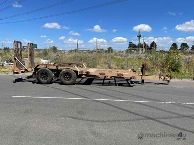
2001 DoT bogie plant trailer, 10,000 kg ATM, 5.2 m x 1.97 m — decent link
$12,500 (ex GST, $13,750 inc GST) · Melbourne, VIC (dealer, delivers nationally) (440km)
2001 · 10,000 kg ATM · 5.2 m x 1.97 m deck · bogie axle per description · ramps and brakes not stated · rego not stated · still listed 2026-10-15
Cheapest confirmed 10 t unit, but it is a 2001 build at a Melbourne dealer beyond the radius, and the ad says nothing about ramps or brakes. Delivery cost decides it.
Machines4u · first seen 2026-10-02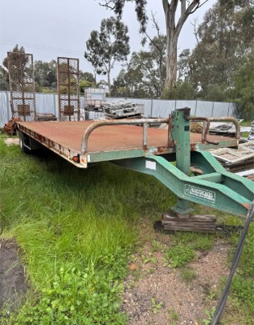
2006 beavertail tag trailer, 12 t ATM claimed, 6 m deck with ramps — decent link
$18,000 · Bendigo, VIC (300km)
2006, 1 owner · seller text, word for word: 6m long single axle, 12 tonne ATM capacity · a single axle and a 12 t ATM conflict; one of the two claims may be wrong · axle count unconfirmed from photos · Bartlett coupling, ramps · rego status not stated · listed 5 weeks ago, still up 2026-10-15
Lowest price in band for a claimed 12 t tag, but the ad says single axle, which undercuts that rating. Get a photo of the compliance plate and wheels before driving 300 km.
Facebook Marketplace · first seen 2026-10-08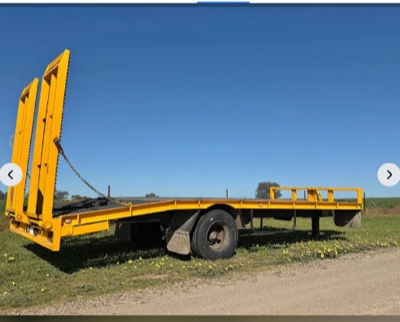
2014 plant trailer, 9 t ATM, spring suspension — decent link
$22,500 · Wagga Wagga, NSW (160km)
2014 · 9 t ATM · spring suspension · condition used - good · axles, ramps, deck size and rego not stated · listed 4 weeks ago, still up 2026-10-15
Its stated 9 t rating covers the tractor, and it is 160 km away. It is $2,500 over the ceiling and the ad is thin, but 4 weeks unsold leaves room to offer.
Facebook Marketplace · first seen 2026-10-10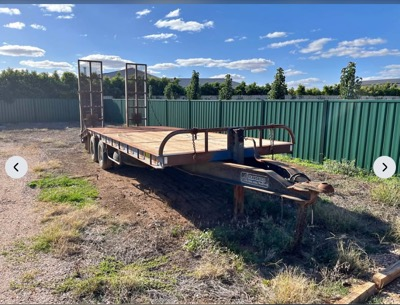
2001 tandem beavertail tag trailer, 16 t capacity claimed, 7.5 m deck — decent link
$24,000 (ono; list price shown as reduced from $28,000) · Griffith, NSW (70km)
2001, tandem axle, near-new axles per seller · seller states 16 t capacity; ATM figure not stated · 4,380 kg tare · deck 7.5 m x 2.5 m, 6 m flat section; 9.5 m overall · manual ramps, Bartlett 8-ball hitch, spare tyre · no rego · brakes not stated · listed 22 weeks ago; seller may help with local transport
Clears the year and has a beavertail, ramps and a 16 t rating, and it is 70 km away. It is $4,000 over the ceiling with no rego, but after 22 weeks listed an ono offer near $20,000 is worth a call.
Facebook Marketplace · first seen 2026-10-14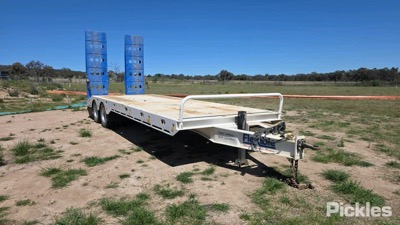
2021 Midland Tag 2 tandem axle plant trailer with ramps — decent link
price TBC (Page reads 'Item Not Yet Available for Sale'. Auction starts 27 Oct. No price shown.) · Hume, ACT (400km)
2021 Midland Tag 2, compliance 09/2021 · tandem axle, beavertail with tall ramps (from photo) · last registered YA37AI, current status TBA · ATM, tare and deck size not stated on page · pick-up only
Newest tag on the list and at the edge of the radius. No ATM or price is shown yet, so confirm the rating before bidding opens on 27 Oct.
Pickles · first seen 2026-10-13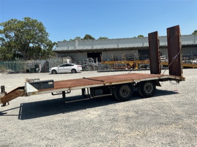
2011 RBM tandem beavertail tag trailer with ramps, carries 7.8 t — decent link
price TBC (Auction: bidding opens 16 Oct 2pm AEDT, closes 22 Oct 8pm AEDT. $9 opening placeholder, 0 bids, reserve not met. Buyer's premium variable, 16.5% on $5,501-$27,500. GST inclusive. Now lot 13 of the same sale.) · Dandenong South, VIC (470km)
2011 RBM, dual axle, trailing spring suspension · Grays: 'This Trailer Can Carry 7.8 Tonne' · beavertail with ramps, 6.0 m long, 900 mm deck height · drum brakes, 8.25R15 tyres, toolbox · rego U25629 expired 2026-03-14 · surface rust over the trailer · ATM figure not stated · 7 watching; pick-up only
Clears every must, and the 7.8 t carry suits a loader tractor, with ramps and brakes. It is 470 km away with lapsed rego and rust, and the price is set only when bidding closes on 22 Oct.
Grays · ends 2026-10-22 · first seen 2026-10-13
recently gone: 2020 Panus tri-axle drop deck trailer, 22,000 kg ATM at price TBC (Pickles page now shows SOLD) (sold); 2005 Ally Weld Tag 2 dual axle plant trailer at $2,600 (auction closed 7:00pm AEDT 8 Oct; final bid not shown on the page; last bid read was $2,600) (sold)
Dog cooling mat for the golden retriever
link
up to $150 · within 20km of Moonee Ponds, VIC
must have: large or extra large: at least 90 x 50 cm, so a 30 kg golden retriever can lie flat on it; actually cools: pressure-activated gel, water-filled or evaporative design, not a plain fabric bed
nice to have: self-cooling gel, no fridge, water or power needed; chew and scratch resistant cover, wipe clean; folds or rolls up; pickup within 20 km of Moonee Ponds, or posted
Price ceiling is a guess: a good XL gel mat is $40-$100 new, so a used one under $40 or a new one on sale is the value play. Posts easily, so Australia-wide listings with shipping count as decent.
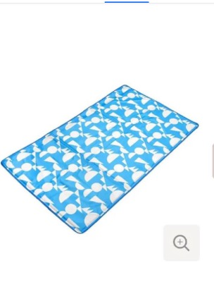
Lexi & Me cooling mat Large, 98 x 81 cm (Mykonos blue) — strong link
$10 (reduced from $20) · St Kilda East, VIC (10km)
size L, 81 x 98 cm · self-cooling non-toxic gel inside, no fridge needed · reversible, wipe or hose clean · used, good condition · pickup St Kilda East
Branded gel mat well over the size floor for $10.
Facebook Marketplace · first seen 2026-10-11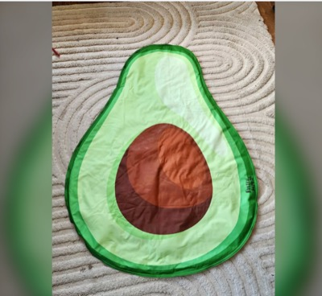
Large self-cooling dog mat, 108 x 78 cm (avocado print) — strong link
$10 (reduced from $15) · Yarraville, VIC (10km)
108 x 78 cm at widest points · self-cooling, no fridge needed, dissipates body heat · used, like new; seller's dog did not take to it · free delivery near Yarraville
Biggest mat on the list, now $10, barely used, and the seller will drop it off locally.
Facebook Marketplace · first seen 2026-10-10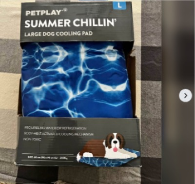
Petplay Summer Chillin' large dog cooling pad, 60 x 90 cm, new — strong link
$15 · Moonee Ponds, VIC (0km)
size 60 cm W x 90 cm L, read off the box in the photo · body-heat activated, no water or refrigeration (box) · new, box a little crushed · pickup Moonee Ponds
New gel pad that clears 90 x 50 cm for $15, and it is in Moonee Ponds, so no drive at all.
Facebook Marketplace · first seen 2026-10-13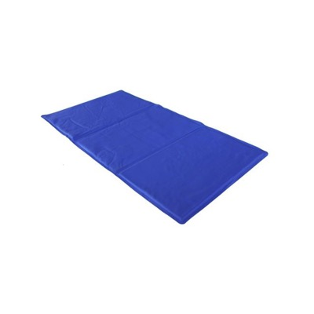
Pillar pet cooling mat, 90 x 60 cm — strong link
$19 · Online (ships)
90 x 60 cm · gel, absorbs body heat, no refrigeration · scratch-resistant PVC/polyester cover · new; $19, no sale shown · store stock not checked (no store selected)
Cheapest new gel mat that clears 90 x 50 cm, $10 under the Kmart large, with a scratch-resistant cover.
Bunnings · first seen 2026-10-13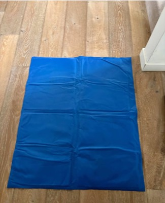
New large cooling pet mat, 95 x 80 cm — decent link
$20 (seller paid $60) · Alphington, VIC (10km)
95 x 80 cm · new, not used · listing says only 'stays cool'; gel or water fill not stated · pickup Alphington
New and well over the size floor for $20 at 10 km, but the listing does not say how it cools.
Facebook Marketplace · first seen 2026-10-14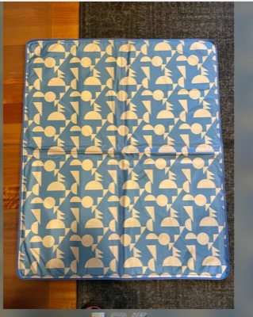
Petstock cooling gel mat, approx 97 x 80 cm — decent link
$20 · Glen Huntly / Ormond, VIC (20km)
approx 97 x 80 cm, 3 mm thick · cooling gel, Petstock brand · used once or twice, like new · pickup Glen Huntly or Ormond, or $20 flat-rate AusPost
Good gel mat for $20 with $20 flat-rate post, but it is the furthest pickup and three closer mats cost less.
Facebook Marketplace · first seen 2026-10-10
recently gone: Dog cooling mat, 90 x 50 cm, used at $5 (sold)
500 L poly water trough or tub for the dog to cool off in
link
up to $500 · within 20km of Moonee Ponds, VIC
must have: plastic (poly) trough or tub, roughly 400 to 600 L; low enough for a golden retriever to step in: sides about 300 to 450 mm; wide enough to lie in: at least 1.2 m across or long
nice to have: drain bung; UV stabilised, food grade poly; smooth inside, no sharp edges; pickup within 20 km of Moonee Ponds, or delivered
Benchmark: Tank World 500 L sheep trough, 1,570 mm across, 340 mm deep, 50 mm drain bung. New poly troughs this size are a few hundred dollars from tank makers, rural stores and Bunnings; a used one on Marketplace is the value play. Price ceiling is a guess.

Tank World 500 L poly Dog Pool (DP500) — decent link
$495 (RRP $595; plus delivery from Swan Hill, charge not published) · Swan Hill, VIC (delivers to Melbourne, Zone 1) (340km)
1,570 mm across · 340 mm deep · 40 mm drain bung · solid polyethylene, smooth inside, reinforced top edge · Tank World says any dog pool fillable to 300 mm or more needs a pool fence; check council rules · Zone 1 delivery covers Melbourne; the charge is only by phone or the on-page address calculator · Price and specs re-read on the live page 2026-10-15
Still the only listing that meets all three size musts, $5 under the ceiling before freight, but the delivered price is unknown and it needs a pool fence.
Tank World · first seen 2026-10-10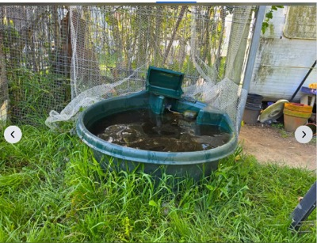
Horse trough (green poly, round) — stretch link
$200 · Diamond Creek, VIC (30km)
Used - good; seller will clean it before pickup · Photos show a round green poly trough with a covered float valve · Size, capacity, depth and drain not stated · Listed 6 days ago, still up on 2026-10-15 at the same price
$295 under the Dog Pool and still the only used poly trough near Melbourne, but no size is given and it is 10 km past the 20 km limit.
Facebook Marketplace · first seen 2026-10-11
RapidPlas Round Livestock Feed Trough 500 L, black — stretch link
$345 (Bunnings Marketplace, online only, shipped by RapidPlas; delivery charge not checked) · Online (ships)
Bunnings spec: 1,300 mm wide, 500 mm high · 2-inch drain bung · food-grade polyethylene, stackable · Sold as a feed trough; no UV or inside-finish detail · Price re-read 2026-10-15
$150 cheaper than the Dog Pool and wide enough, but its 500 mm sides are 50 mm over the step-in limit for a golden.
Bunnings · first seen 2026-10-11
Tank World 700 L poly Dog Pool (DP700) — stretch link
$535 ($535 to $585 depending on colour; plus delivery from Swan Hill, charge not published) · Swan Hill, VIC (delivers to Melbourne, Zone 1) (340km)
1,850 mm across · 370 mm deep · 700 L, above the 400-600 L range · 40 mm drain bung · polyethylene, smooth inside, reinforced top edge · Over 300 mm deep, so a pool fence applies as with the 500 L
Low 370 mm sides and 280 mm wider for a lying dog, but $35 over the ceiling before freight and above the 600 L range.
Tank World · first seen 2026-10-11
Tank World 500 L poly Sheep Trough (WTS500BL) — stretch link
$560 (RRP $595; plus delivery from Swan Hill, charge not published) · Swan Hill, VIC (delivers to Melbourne, Zone 1) (340km)
1,570 mm across · 340 mm deep · 50 mm drain bung · covered 25 mm float valve · polyethylene
The benchmark shape, but $65 more than the Dog Pool for a float valve the dog does not need, and $60 over the ceiling before freight.
Tank World · first seen 2026-10-10
Hunt log
all 22 runs
Prices are what the seller or auction house is asking, before premium, transport or GST unless noted. Verify everything before you commit money.
Nothing here is financial advice. Holdings and opinions are my own; the "agent" sections are written by an automated research skill and may be wrong. Built 2026-10-14 13:52 UTC.